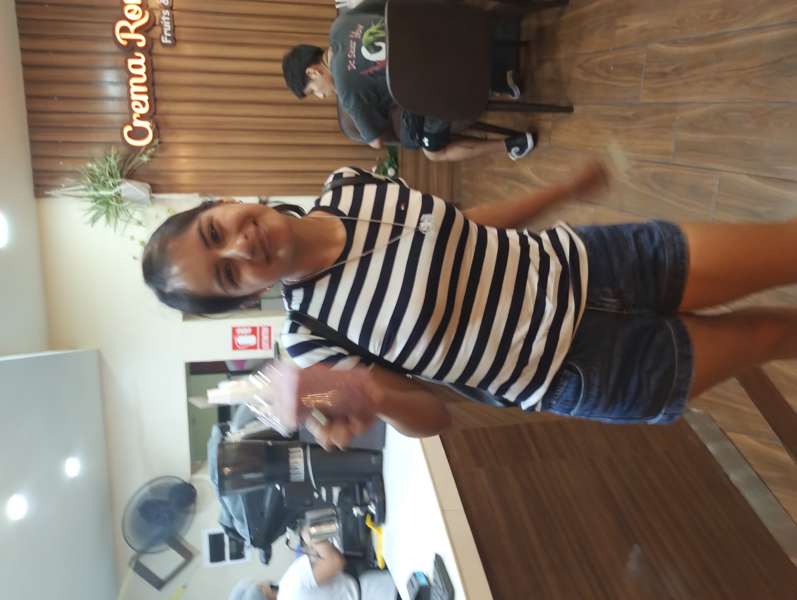
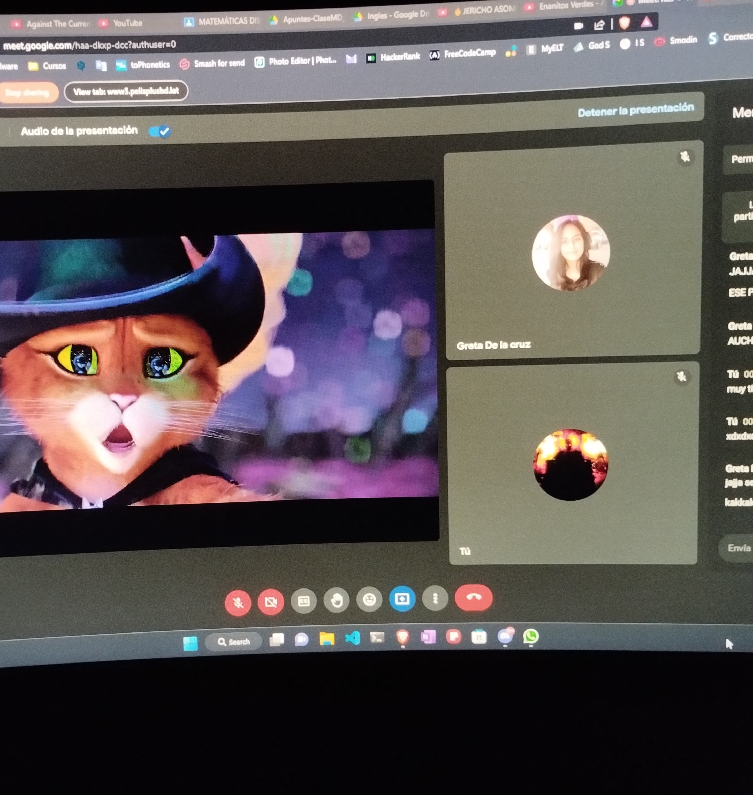
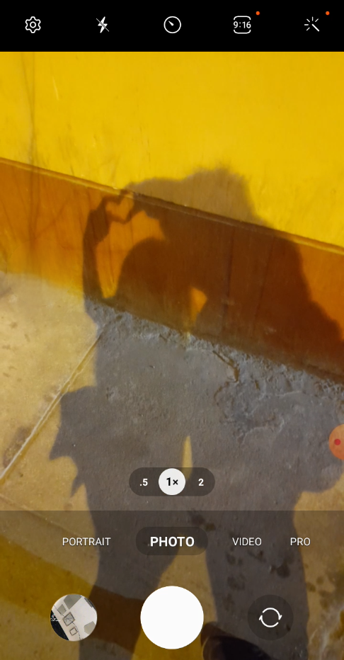

Solo quería decir gracias. Disfruta de la música
Foto de Spotify
Feria
Perro celoso
Salida lluviosa

Jugo 🥤
Intentando sacar fotos 📸

Caras de enfermos 🥴
Cuando fuimos al cine

El gato con botas 🐈

La foto de Pinterest